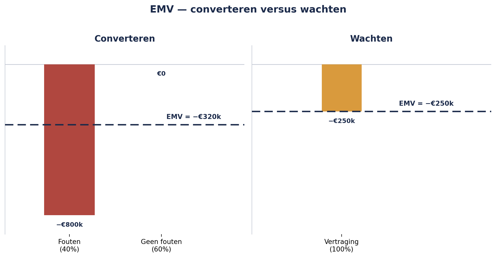

Deel 14 — Kwantitatief I: verwachtingswaarde, beslisbomen, drie-puntsschattingen
Niveau 2 — Professional · Slidedeck (25 slides)
Slide 1 — Titel
Risicomanagement Deel 14 — Kwantitatief I: verwachtingswaarde, beslisbomen, drie-puntsschattingen
Niveau 2: Professional
Slide 2 — Terugblik
Acht risico’s tussen projecten gevonden.
Vandaag: een beslissing die “hoog/midden/laag” niet aankan.
Slide 3 — De sequencing-kwestie, nu een beslissing
Wachten op Project 5? Of converteren met ongeschoonde data?
Slide 4 — Beide “hoge impact”
Maar fundamenteel verschillend.
Het bestuur wil euro’s, geen kleur.
Slide 5 — De grens van kwalitatief
Hier bereikt de matrix haar grens.
Slide 6 — Vier voorwaarden om te kwantificeren
Materiële gevolgen · Wezenlijk verschillende opties
Slide 7 — Vier voorwaarden, vervolg
Voldoende data · Beslissing op hoog niveau
Slide 8 — Opdracht 14.1 — plenair, 15 minuten
Drie situaties. Kwantificeren, ja of nee?
Slide 9 — Verwachtingswaarde (EMV)
$$EMV = \sum (kans \times gevolg)$$
Slide 10 — Converteren
40% kans -€800.000, 60% kans €0
EMV = -€320.000
Slide 11 — Wachten
100% kans -€250.000
EMV = -€250.000
Slide 12 — Figuur 14-1

Slide 13 — Opdracht 14.2 — 20 minuten
Bereken twee EMV’s. Adviseer.
Slide 14 — Beslisbomen
Een keten van keuzes en onzekerheden — niet één moment.
Slide 15 — Figuur 14-2

Slide 16 — Het verschil wordt kleiner
Eerste berekening: -€250.000 Met extra vertakking: -€280.000
Nog steeds gunstiger — maar minder overtuigend.
Slide 17 — Opdracht 14.3 — 20 minuten
Breid de beslisboom uit. Herbereken.
Slide 18 — Drie-puntsschattingen
Eén getal is schijnzekerheid.
Optimistisch — Meest waarschijnlijk — Pessimistisch
Slide 19 — PERT-formule
$$\frac{O + 4M + P}{6}$$
Slide 20 — Project 5: 4, 6, 12 weken
$$\frac{4 + 24 + 12}{6} \approx 6{,}7\ weken$$
Niet precies op M — de asymmetrie trekt de waarde omhoog.
Slide 21 — Figuur 14-3

Slide 22 — Opdracht 14.4 — 20 minuten
Bereken de PERT-waarde. Wat zegt de spreiding?
Slide 23 — Kernzin 9
Een kwantitatieve uitkomst is nooit beter dan de kwalitatieve schatting waarop ze is gebouwd — rekenen voegt precisie toe aan de vorm, niet aan de waarheid van de invoer.
Slide 24 — Drie waarschuwingen
Schijnprecisie in een indrukwekkender jasje Disproportionele tijdsinvestering Een getal dat het gesprek dichttimmert
Slide 25 — Voor deel 15
Deel 15 (2 dagdelen): Monte Carlo-simulatie — honderden uitkomsten tegelijk, hands-on met een echte tool.